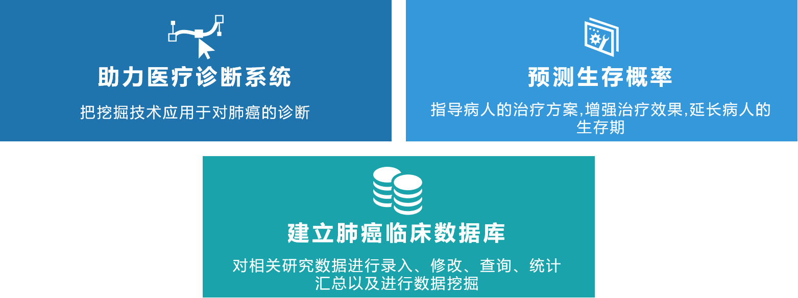
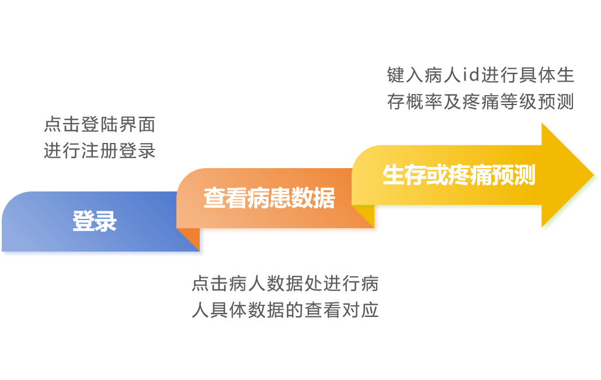

关于我们
我们是生存质量分析团队，致力于运用先进的数据分析技术和医疗专业知识，为医疗行业提供高效准确的生存质量分析服务。作为医疗领域的专业团队，我们深知生命的可贵和健康的重要性，我们的使命是利用技术和数据为患者的生存质量提供更好的保障。 我们团队汇集了一群具有经验的医疗数据分析师、临床医生。我们拥有先进的技术工具和行业专业知识，能够处理各种医疗数据并从中挖掘出有价值的信息。
通过对患者的临床数据、生活习惯、疾病情况等多方面的综合分析，我们可以为医生和患者提供个性化的生存质量评估和预测。我们的分析报告可以帮助医生更好地制定治疗方案，帮助患者了解自己的健康状况，做出更明智的健康决策。 我们团队秉承着严谨务实的工作态度，始终以客户需求为中心，为客户提供专业、可靠的服务。我们将不断努力，不断创新，为医疗行业的发展贡献自己的力量，为患者的健康保驾护航。

使用指南

常见问题解答
首先，点击注册处，填入姓名，邮箱号进行注册；注册完成后，将新注册的用户名密码填入，即可登录。
要使用一个简单的预测系统对数据进行结果的输出，你可以按照以下步骤进行：
1. 准备数据：确保你有一组准备好的数据，包括输入特征和相应的目标变量（或标签）。
2. 加载模型：已经训练好了一个预测模型，例如机器学习模型或统计模型，需要将其加载到预测系统中。
3. 输入数据：将待预测的数据输入到预测系统中。
4. 进行预测：使用加载好的模型对输入的数据进行预测。预测结果将会根据模型的算法和输入数据产生。
5. 输出结果：将预测结果输出到相应的地方。
点击结果查询，即可获得生存时间以及疼痛分级的结果输出。在生存时间中，输出结果为对应生存时间的预测百分比；而在疼痛等级中，是所对应的疼痛等级的预测概率。可以通过比较概率值，来判断该患者的生存质量。